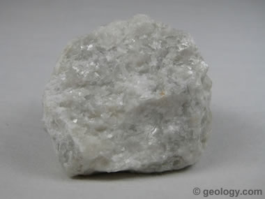
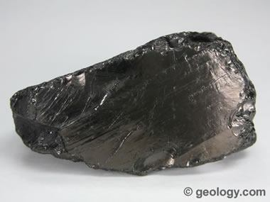

Metamorphic Rocks
Metamorphic rocks have been modified by heat, pressure, and chemical processes, usually while buried deep below Earth's surface. Exposure to these extreme conditions has altered the mineralogy, texture, and chemical composition of the rocks. There are two basic types of metamorphic rocks.
Foliated metamorphic rocks have a layered or banded appearance that is produced by exposure to heat and directed pressure. Examples of foliated rocks include: gneiss, phyllite, schist, and slate
Non-foliated metamorphic rocks do not have a layered or banded appearance. Examples of nonfoliated rocks include: hornfels, marble, novaculite, quartzite, and skarn.

Obsidian is a naturally occurring volcanic glass formed when lava extruded from a volcano cools rapidly with minimal crystal growth.
Sedimentary Rock Information
Lapis Lazuli

Lapis lazuli, also known simply as "lapis," is a blue metamorphic rock that has been used by people as a gemstone, sculpting material, pigment, and ornamental material for thousands of years. High quality lapis lazuli can be a costly gem. The most desirable specimens have a rich, solid blue color and perhaps a few reflective pieces of gold pyrite. Unlike most other gem materials, lapis lazuli is not a mineral. Instead, it is a rock composed of multiple minerals. The blue color of lapis lazuli is mainly derived from the presence of lazurite, a blue silicate mineral of the sodalite group with a chemical composition of (Na,Ca)8(AlSiO4)6(S,Cl,SO4,OH)2.
Marble
Marble is a metamorphic rock that forms when limestone is subjected to the heat and pressure of metamorphism. It is composed primarily of the mineral calcite (CaCO3) and usually contains other minerals, such as clay minerals, micas, quartz, pyrite, iron oxides, and graphite. Under the conditions of metamorphism, the calcite in the limestone recrystallizes to form a rock that is a mass of interlocking calcite crystals. A related rock, dolomitic marble, is produced when dolostone is subjected to heat and pressure.
Anthracite
Anthracite is the highest rank of coal. Unlike other types of coal, it is usually considered to be a metamorphic rock. It has a carbon content of over 87% on a dry ash-free basis. Anthracite coal generally has the highest heating value per ton on a mineral-matter-free basis. It is often subdivided into semi-anthracite, anthracite, and meta-anthracite on the basis of carbon content. Anthracite is often referred to as "hard coal"; however, this is a layman's term and has little to do with the hardness of the rock.
Gneiss
Gneiss is a foliated metamorphic rock identified by its bands and lenses of varying mineral composition. Some of these bands (or lenses) contain granular minerals that are bound together in an interlocking texture. Other bands contain platy or elongated minerals that show a preferred orientation that parallels the overall banding in the rock. It is this banded appearance and texture - rather than composition - that define a gneiss.
Hornfels
Hornfels is a fine-grained metamorphic rock that was subjected to the heat of contact metamorphism at a shallow depth. It was "baked" by heat conducted from a nearby magma chamber, sill, dike, or lava flow. Common temperatures for the formation of hornfels range from about 1300 to 1450 degrees Fahrenheit (700 to 800 degrees Celsius). Because directed pressure does not play a significant role in the formation of hornfels, it is often made up of mineral grains that are equidimensional in shape and without a preferred orientation. The grain shape and orientation might also be inherited from its parent rock.
Phyllite
Phyllite is a foliated metamorphic rock that has been subjected to low levels of heat, pressure and chemical activity. It is composed mainly of flake-shaped mica minerals in parallel alignment. The strong parallel alignment of the mica grains allows the rock to be easily split into sheets or slabs. The alignment of the mica grains gives phyllite a reflective sheen that distinguishes it from slate, its metamorphic precursor or protolith. Phyllite is usually gray, black, or greenish in color and often weathers to a tan or brown. Its reflective sheen often gives it a silvery, nonmetallic appearance. Phyllite is a very common metamorphic rock, found in many parts of the world. It forms when sedimentary rocks are buried and mildly altered by the heat and directed pressure of regional metamorphism. These are almost always convergent plate boundary environments involving continental lithosphere.
Novaculite
Novaculite is a dense, hard, fine-grained siliceous rock that breaks with a conchoidal fracture. It forms from sediments deposited in marine environments where organisms such as diatoms (single-celled algae that secrete a hard shell composed of silicon dioxide) are abundant in the water. When the diatoms die, their silicon dioxide shells fall to the seafloor. In some areas these diatom shells are the primary ingredient of the seafloor sediments. During diagenesis (the transformation from sediment to rock) the silicon dioxide from the diatom shells is transformed into chalcedony (a microcrystalline silicon dioxide). At this point the rock is chert. The chert is transformed into novaculite as further diagenesis and low-grade metamorphism recrystallize the chalcedony into microcrystalline quartz grains.
Schist
Schist is a foliated metamorphic rock made up of plate-shaped mineral grains that are large enough to see with an unaided eye. It usually forms on a continental side of a convergent plate boundary where sedimentary rocks, such as shales and mudstones, have been subjected to compressive forces, heat, and chemical activity. This metamorphic environment is intense enough to convert the clay minerals of the sedimentary rocks into platy metamorphic minerals such as muscovite, biotite, and chlorite. To become schist, a shale must be metamorphosed in steps through slate and then through phyllite. If the schist is metamorphosed further, it might become a granular rock known as gneiss. A rock does not need a specific mineral composition to be called schist. It only needs to contain enough platy metamorphic minerals in alignment to exhibit distinct foliation. This texture allows the rock to be broken into thin slabs along the alignment direction of the platy mineral grains. This type of breakage is known as schistosity.
Quartzite
Quartzite is a nonfoliated metamorphic rock composed almost entirely of quartz. It forms when a quartz-rich sandstone is altered by the heat, pressure, and chemical activity of metamorphism. Metamorphism recrystallizes the sand grains and the silica cement that binds them together. The result is a network of interlocking quartz grains of incredible strength.